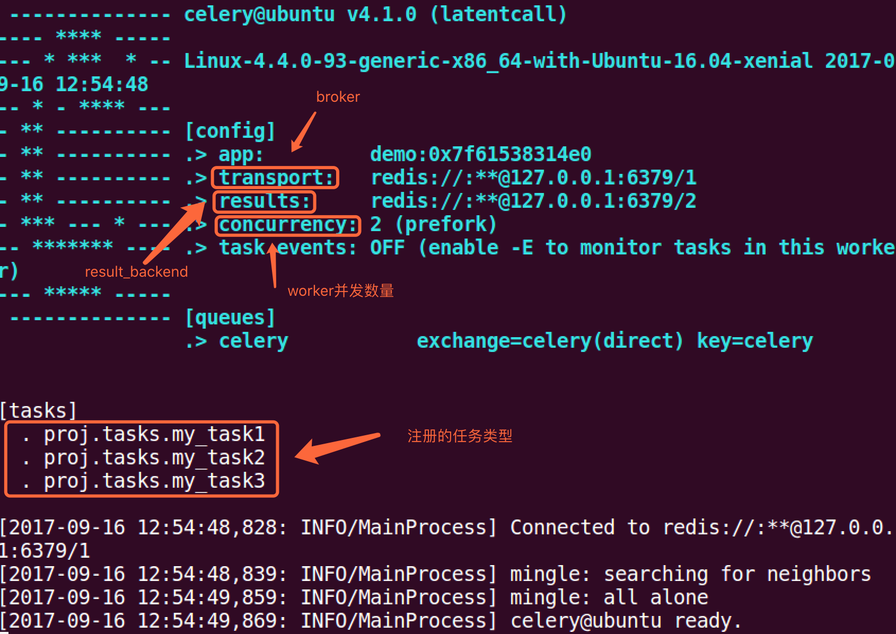

我的项目目录:
TestCelery/ ├── proj │ ├── celeryconfig.py │ ├── celery.py │ ├── init.py │ └── tasks.py └── test.py
celery.py内容如下:
from celery import Celery
# 创建celery实例
app = Celery('demo')
app.config_from_object('proj.celeryconfig')
# 自动搜索任务
app.autodiscover_tasks(['proj'])
celeryconfig.p模块内容如下：
from kombu import Exchange, Queue
BROKER_URL = 'redis://:332572@127.0.0.1:6379/1'
CELERY_RESULT_BACKEND = 'redis://:332572@127.0.0.1:6379/2'
tasks.py模块内容如下:
from proj.celery import app as celery_app
# 创建任务函数
@celery_app.task
def my_task1():
print("任务函数(my_task1)正在执行....")
@celery_app.task
def my_task2():
print("任务函数(my_task2)正在执行....")
@celery_app.task
def my_task3():
print("任务函数(my_task3)正在执行....")
启动worker:
celery -A proj worker -l info
 键入ctrl+c可关闭worker.